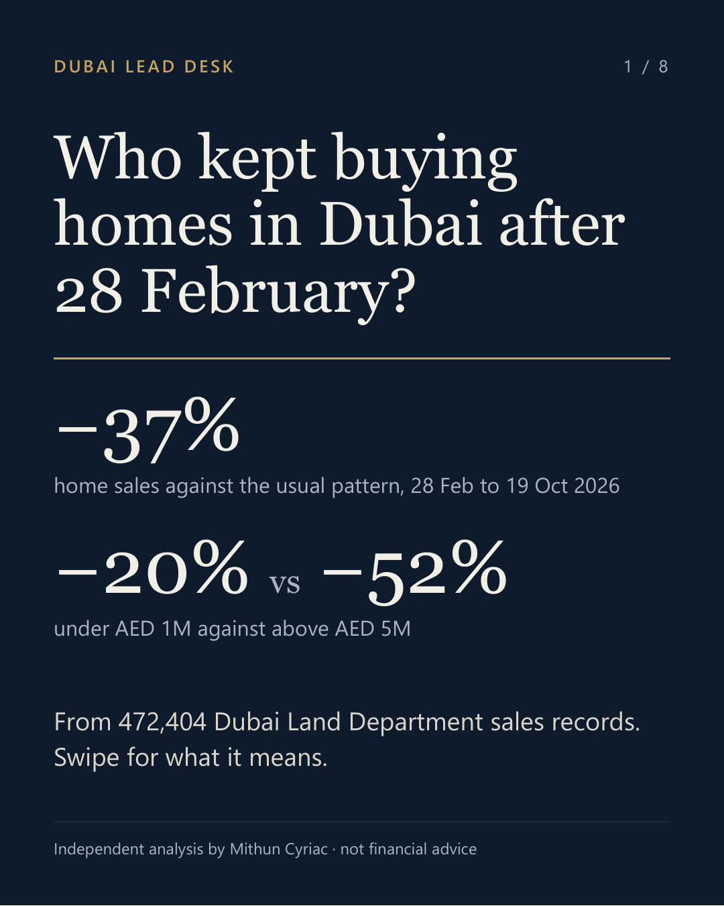
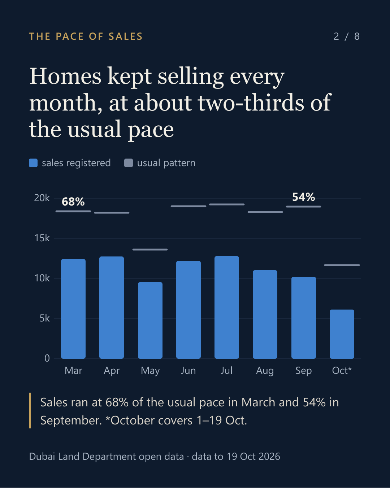
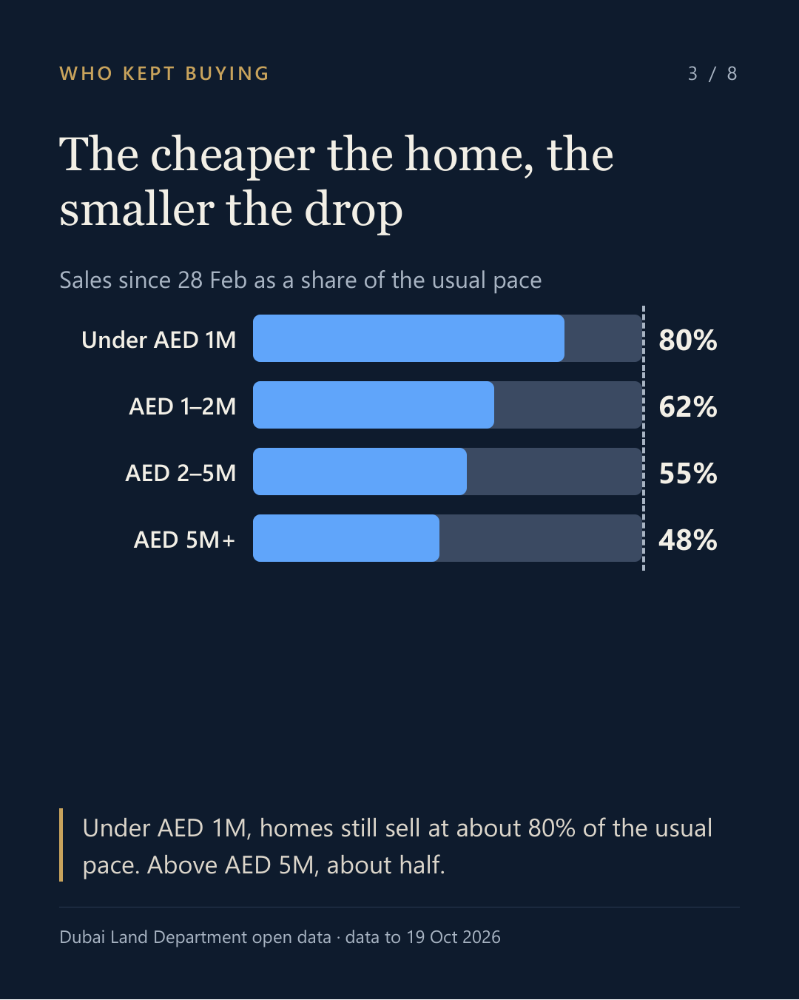
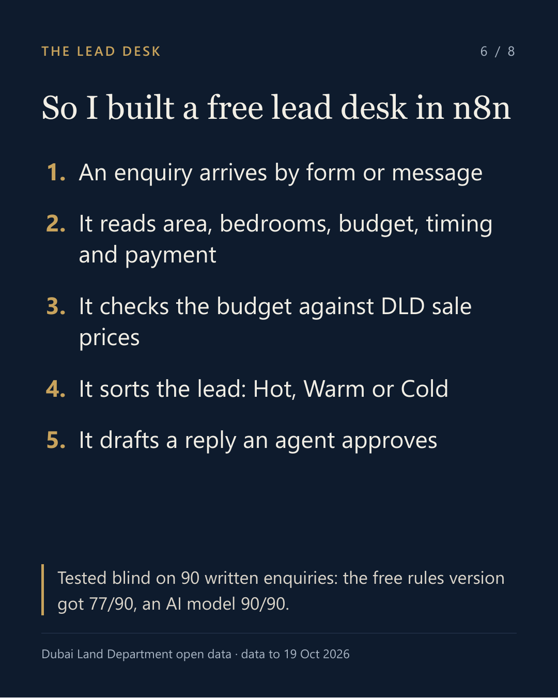

Who kept buying homes in Dubai since late February?
What 472,404 Dubai Land Department sales records show, and the small tool I built from them. Data to 19 Oct 2026.

Dubai publishes its property records openly. Every registered sale, every Ejari rental contract, every project. Few cities make that possible. I wanted to use it to answer one plain question. Since late February, who has kept buying homes, and at what pace?
Market reports give you a headline number, usually a quarter late. I wanted it month by month and split by price, straight from the records. So I took every registered home sale since January 2024: 472,404 of them. I added 46,023 Ejari rental contracts and DLD's lists of projects and valuations.
Here's what I found, and what I'd do with it.
About two-thirds of the usual pace
From March to September, about 11,600 homes sold in Dubai each month. In the third quarter alone there were 34,047 sales worth AED 67.9 billion.
To judge the pace fairly, you can't just compare this year with last. Sales move with the seasons, with Ramadan and Eid, and with the day of the week. So I fitted a model to the usual pattern, from January 2024 to February 2026. Then I compared each month since with what that pattern would expect.
Since late February, 87,052 sales were registered, against about 137,260 in the usual pattern. That's about two-thirds of the usual pace, likely somewhere between 52% and 77%. The pace was 68% in March and 54% in September.

Everyday buyers were the steadiest
Split the same sales by price and the picture gets clearer:
- Under AED 1M: about 80% of the usual pace
- AED 1M to 2M: about 62%
- AED 2M to 5M: about 55%
- Above AED 5M: about 48%
Homes under AED 1M, the ones most first-time buyers look at, held their pace best. Larger purchases are taking longer.

Prices moved less than sales
A simple average price can mislead. If fewer large apartments sell, the average goes down even when nothing got cheaper. So I compared sales within the same buildings over time. On that basis, ready flats in JVC are about 8% below their January level, and in Dubai Marina about 5%.
Asking prices haven't fully caught up. The listings I checked on Bayut and Property Finder asked about 7% more than recent DLD sales in JVC. In Dubai Marina it was about 9%.
Renting out still pays
I matched Ejari leases with DLD sale prices since late February. A JVC flat earns a gross rental yield of about 7% a year. In Dubai Marina it's between 5% and 7%.
A lot of new supply is on the way
JVC has 19,756 flats that were sold off-plan since 2024 and haven't been handed over yet. At the current pace of 767 sales a month, that's about 26 months of sales. Buyers can take their time.
What this means if you're buying your first home
This is my reading, not advice, but here's what I'd take from it:
- Start from what homes actually sold for, not the asking price. DLD's records are public.
- Under AED 1M, expect competition. Those homes still sell at about 80% of their usual pace.
- With a bigger budget, you probably have more room to negotiate than you'd think.
- Prices have moved less than sales, so there's time to compare.
- In JVC, a lot of new supply is on the way, so compare ready and off-plan before you commit.
What it means for a brokerage, and the tool I built
If I ran a brokerage, I'd notice that 70% of sales since February were under AED 2M. Those buyers expect a quick answer. The rarer large purchases deserve a senior agent from the first message. That's a recommendation, not a measured result. Whether faster replies win more deals is something a brokerage would have to test.
So I built a small lead desk to try the idea. It runs in n8n, on my laptop, for free. An enquiry comes in by web form or message. The desk reads the area, bedrooms, budget, timing and how they're paying. It checks the budget against DLD's recent sale prices for that kind of home. Then it sorts the lead into Hot, Warm or Cold and drafts a first reply. An agent approves the reply before anything goes out. If the same person writes in again with their number written differently, it merges the two.
I tested it on 90 enquiries written for the test. Thirty were built to trip it up, and the answers were hidden from the desk. The free version, which reads enquiries with plain rules, got 77 of 90 right. It stumbles on wording it has no rule for, like numbers written as words. An AI model reading the same messages blind got 90/90, but that version needs a paid API key. I'd rather show the free one honestly than oversell the paid one.
One detail I liked. Checking budgets against current prices, not older averages, changed the tier of 4 of the 90 test leads. Those are exactly the leads an agent might otherwise misjudge.

A forecast you can check
Hindsight is easy, so here's something that can be wrong. For November 2026, I expect between 9,800 and 11,600 home sales in Dubai. The usual pattern alone would expect about 18,400. The low end assumes the pace of recent weeks continues (53% of usual). The high end assumes the average pace since February (63%).
DLD's November records should be out by 7 December 2026. I'll check then, and again on 7 January 2027, because DLD can still add late registrations. If the real number lands outside the range, the model needs another look, and I'll say so. So nobody has to take my word for the timing, the forecast is archived with a DOI: https://doi.org/10.5281/zenodo.23759152.
Method, briefly
- Data: Dubai Land Department open data. 472,404 residential sales from 1 January 2024 to 19 Oct 2026, 46,023 Ejari flat leases, plus DLD projects and valuations. 214 portal listings, checked on one day, for asking prices (only totals are published).
- The usual pattern: a regression on daily sales (Python, statsmodels). It allows for weekday, month, year, Ramadan and Eid, with one step from 28 February. The same model is run for each price band and area.
- Prices: a same-building index of price per square foot for ready flats, January 2026 = 100.
- Checks: my totals against figures others published from the same DLD records. 6 match, 3 close and 3 miss, all listed in the repo with reasons. Every number reruns from one command, and GitHub reruns it on each change.
- Lead desk: n8n 2.42.5, self-hosted; rules-only reading; tested blind on 90 written enquiries.
Limitations
The model describes what happened after 28 February, not why. The likely range around the overall pace is wide, and a simpler trend model gives 65% instead of 63%. DLD records a sale when it's registered, which can be weeks after the deal. So the latest months may still rise a little. October only runs to the 19th. Asking prices come from one day's listings. And the desk's test messages were written for the test, not sent by real buyers.
Three published figures don't match mine. One covers the whole UAE. One quarterly total includes property types I left out. And one price index moves sooner because it's based on valuations rather than registered sales. I've kept those in the comparison instead of quietly dropping them.
See it, rerun it
- The dashboard, written for first-time buyers: https://mithuncyriac.github.io/dubai-lead-desk/
- The code, the data and every check: https://github.com/mithuncyriac/dubai-lead-desk
If you work in Dubai property and something here doesn't match what you're seeing, I'd like to hear it.
Independent analysis by Mithun Cyriac, made possible by the Dubai Land Department's open data. Built with Python, statsmodels, n8n and an AI model. Data to 19 Oct 2026. Not financial advice.